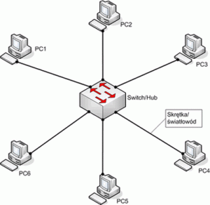
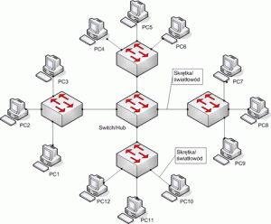
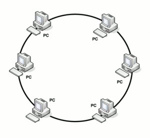

Topologia sieci komputerowej określa relację pomiędzy urządzeniami w sieci, połączenia między nimi oraz sposób przepływu danych. Topologię należy rozpatrywać w dwojaki sposób, w sposób fizyczny (zwany topologią fizyczną) oraz logiczny (zwany topologią logiczną). Topologie fizyczne odzwierciedlają fizyczne rozmieszczenie urządzeń w sieci oraz połączenia między nimi:
W tej topologii wszystkie urządzenia podłącza się do wspólnego medium transmisyjnego. Powszechnie stosowanym w tej topologii medium był kabel koncentryczny, zarówno cienki, jak i gruby. Zastosowanie „koncentryka” jako fizyczne medium stanowiło jedną z wad tej topologii, a mianowicie niewielką przepustowość (maksymalnie do 10 Mb/s). Topologia ta stosowana była do budowy lokalny sieci komputerowych, „była” jest tutaj słowem właściwym ponieważ nie jest już powszechnie stosowana. Poza niską przepustowością, charakteryzowała ją również duża podatność na awarię sieci. W momencie przerwania kabla koncentrycznego cała sieć przestawała działać. Niewątpliwą zaletą w zastosowaniu tej topologii był niewielki koszt jej wdrożenia, ponieważ nie trzeba było stosować setek metrów kabla ani żadnych urządzeń pośredniczących.
W tej topologii wszystkie urządzenia podłączone są do centralnego punktu, stanowiącego punkt dostępu do sieci. Dawniej punkt ten stanowiły koncentratory (ang. hub), obecnie natomiast stosuje się przełączniki (ang. switch). W lokalnych sieciach jest to najczęściej spotykana topologia, ponieważ jest prosta w zaprojektowaniu, budowie oraz rozbudowie, odporna na awaria i łatwo zarządzalna. Dodatkowym plusem jest fakt, iż można przy jej budowie wykorzystać różne media transmisyjne, takie jak miedziana skrętka, kabel światłowodowy czy fale radiowe (WLAN). Istotną wadę stanowić może natomiast koszt budowy, ponieważ wymagane jest zastosowanie dodatkowych urządzeń (switch’y) oraz wiele metrów okablowania.
W tej topologii każde urządzenie podłączone jest z dwoma sąsiadami, tworząc zamknięty krąg. Podobnie jak w przypadku topologii magistrali, przy budowie nie stosuję się dużej ilości okablowania oraz brak jest konieczności stosowania dodatkowych urządzeń. Ponadto można wykorzystać różne media transmisyjne, począwszy od kabla koncentrycznego, po skrętkę miedzianą, aż do kabli światłowodowych. Wadą tego rodzaju topologii jest fakt, iż przerwanie medium lub awaria jednego z komputerów powoduje przerwę w działaniu całej sieci.
